Introduction
This module introduces the most popular chart pattern in technical analysis, which is Candlesticks. This type of chart pattern is used by many traders across the world to predict the price action movements on various financial securities. So, here in this module, we will dive into the world of candlesticks' patterns. Yes, there are several patterns that suggest a particular move in the price of a security that can be either bullish, bearish or even sideways.
So, without any further ado, let's start learning the candlesticks pattern and decode the complexities of it in a simple way.
What are candlestick charts?
Japanese candlestick is the oldest type of trading technique that is used to analyse the future
price movement. In the 1700s, the candlestick charts were used to predict rice prices. In 1750, Munehisa Homma a
Japanese merchant started using his candlestick analysis for trading at the Rice exchange at Sakata.
Candlesticks are one of the most efficient ways to analyse the change in the prices of an asset. It depicts the trader's psychology with utmost clarity, in comparison to other forms of charting.
How to read candlestick Charts?
Candlestick charts are two dimensional charts having a real body, upper shadow and a lower shadow.
Real body: It represents the range between that session's opening and closing. When the real body is black or Red, it means the closing price of the session was lower than the opening price. If the real body is white or green or blue, it means the close was higher than the open.
Shadows: The thin lines above and below the real body are the shadows. These shadows represent the session's price extremes. The shadow above the real body is called the upper shadow and the shadow under the real body is known as the lower shadow. Accordingly, the peak of the upper shadow is the high of the session and the bottom of the lower shadow is the low of the session.
Open Price
- The top or the bottom of the candlestick represents the opening price.
- If the opening price of the asset is more than then the closing price, then the open will be at the top of the candlestick body.
- This shows that the prices were in a downtrend and the colour of the candlestick will be either red or black.
- If the opening price of the asset is less than then the closing price, then the open price will be at the bottom of the candlestick body.
- This shows that the prices were in an uptrend in that timeframe and the colour of the candlestick will be either green, blue or white.
Close Price
- Similarly, like the opening price, the closing price is either at the top or bottom of the candlestick body.If the closing price is more than the opening price, then the close will be at the top of the candlestick body.
- This shows that the prices were in an uptrend in that time frame and the colour of the candlestick will be green, blue or white.
- If the closing price is less than the opening price, then the close will be at the bottom of the candlestick body.
- This shows that the prices were in a downtrend in that time frame and the colour of the candlestick will be red or black.
High Price
- The high price during the specified timeframe is indicated by the top of the shadow above the body.
- There will be no upper shadow if the open or close was the highest price.
Low Price
- The low price during the specified time frame is indicated by the bottom of the shadow below the body.
- There will be no lower shadow if the open or close was the lowest price.
Why do most traders prefer Candlestick Charts?
Most traders prefer using candlestick charts because:
- Each candlestick shows the important price data points: Open, High, Low and Close. They are purely price movements.
- It depicts trading and market psychology
- Identifies Bullish Reversal Signals & Bearish Reversal Signals
- It also identifies Continuation Trends
- They are two dimensional figures so they are easy to understand
- Patterns have been Identified which have a predictive Value
- Candlesticks like Bar Charts show price movements, and they also reveal the force of the current move
- It has the ability to highlight trend weakness and reversal signals that may not be apparent on a normal bar chart.
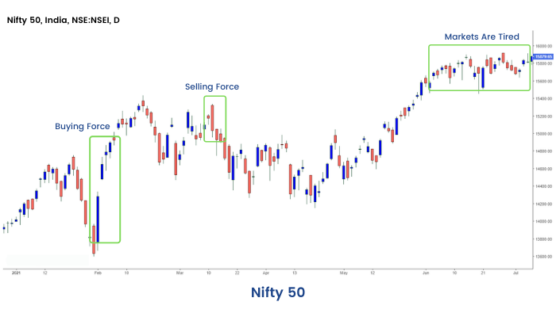
Note: From this section, we have learned the basics of candlesticks and how to read a candlestick chart. But there are several candlesticks patterns that need to be identified for technical analysis. We will learn the art of identifying candlestick patterns in the next unit.
Identify Patterns
How to Identify Candlestick Patterns for a perfect trade setup?
As candlesticks are more appealing, the trader looks for candlestick patterns which can give specific trading signals. They can be broadly classified into continuation or reversal patterns. The candlestick patterns can be a single candlestick pattern or may be formed by grouping two-three candlesticks.
The first step for identifying a successful candlestick pattern is to develop a trade setup that answers four basic questions.
What is the pattern?
Where is the pattern?
How big is the pattern?
Volume of the pattern?
1. What is the Pattern?
The first step is to understand what the particular pattern is? If it is a one, two or three candlestick pattern What is the structure of the pattern? Is it bullish or bearish in nature?
2. Where is the Pattern?
The next important step for a successful trade setup to know where the pattern is placed. If the
pattern is a Bullish Reversal Pattern, it should be occurring after a down trend or a series of falls. If the pattern is a bearish reversal pattern, it should occur after an uptrend or a series of rises. A continuation pattern should be in between or middle of a trend.
3. How Big is the Pattern?
The third important thing to consider is the size of the
pattern and also on what time frame you are looking at the pattern at. Higher the timeframe, stronger is the pattern and the chance of a high probable setup. A candlestick pattern formed on a 15 min time frame chart vis a vis a weekly chart - obviously the weekly pattern holds more importance.
4. Volume on the Pattern?
Last but not the least, Volume is a very important market variable to be studied in technical analysis. If the volume supports the particular pattern formation, your trade set up is ripe in comparison to low volumes.
Types of Candlestick Patterns
We can classify some important candlestick patterns by one, two or three candlestick patterns.
1. One Candlestick Patterns-
- Hammer
- Inverted Hammer
- Spinning Top
- Shooting Star
- Marubozu
- Doji
- Hanging Man
2. Two Candlestick Patterns-
- Bullish Engulfing Pattern
- Bearish Engulfing Pattern
- Bullish Harami Pattern
- Bearish Harami Pattern
- Tweezer Bottom
- Piercing Line
- Dark Cloud Cover
3. Three Candlestick Patterns-
- BMorning Star
- Evening Star
We will discuss each candlestick pattern one by one in upcoming units
Hammer
Firstly, let us start with a popular candlestick pattern which is a Hammer
What is a Hammer CandlestickPattern?
Hammer is a single bullish reversal candlestick pattern that occurs at the bottom of a downtrend. This
candlestick has a long lower shadow which is at least twice the length of the real body and has no upper shadow or a very small upper shadow. The colour of the real body can be either Red or green however a green hammer is much stronger than ared one.
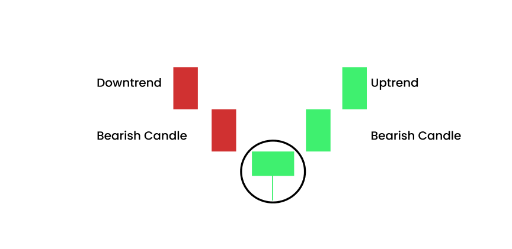
What is the psychology behind the pattern?
A hammer pattern is formed when prices rally from an intra - period sell off, to close near the open. The long lower shadow initially shows that the bears had moved the prices too low, continuing the ongoing bearish trend. The bulls then came and eventually move the prices up and closed it more than
the opening price. Hammers signal that the bears may have lost control over the prices, thus indicating a potential reversal to an uptrend.
Confirmation
Confirmation of this candlestick pattern occurs when the next candle after the Hammer closes above the closing price of the hammer. This confirmation shows that the bullish reversal has taken place. Traders can go long, once the high of the hammer candle is crossed, keeping the low of the hammer candle as the
stoploss.
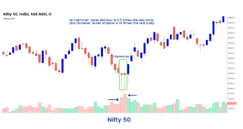
Inverted Hammer
Similar to the Hammer candlestick pattern that we have learned earlier, there is also an Inverted Hammer candlestick pattern. Let's see what it is?
What is an inverted hammer candlestick pattern?
Inverted Hammer is a reversal candlestick pattern appearing at the bottom of a downtrend which signals a bullish reversal. This candlestick pattern has a long upper shadow and no lower shadow. The length of the long upper shadow is minimum twice the height of the real body of the candlestick as shown below:
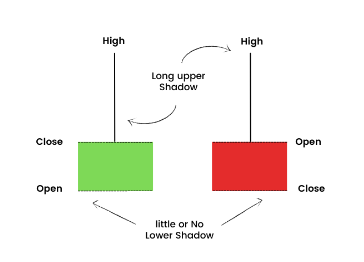
What is the psychology behind the pattern?
The Inverted Hammer is a signal of a probable bullish reversal after a downtrend. It signals that the bulls are now willing to buy the stock at the fallen prices. After the downtrend, there is buying seen at lower levels from the bulls which takes the prices up and the upper shadow is formed. Some profit booking is again seen at those high levels due to which the closing price is near the opening price resulting in the small real body of the pattern. The colour of the pattern - whether red or green is not
important however a green candle is comparatively bullish.
Confirmation
Confirmation of this candlestick pattern occurs when the next candle after the Inverted Hammer closes above the high price of the inverted hammer. This confirmation shows that the bullish reversal probably has taken place.
Traders can go long, once the high of the inverted hammer candle is crossed, keeping the low of the inverted hammer candle as the stoploss. One must remember to confirm this signal with other technical indicators as it may sometimes give a false signal.
Spinning Top Candlesticks Patterns
The next candlestick pattern that we will learn is a Spinning top. It can be either bullish or bearish. Let's see how they are formed?
What is a bullish and bearish spinning top candlestick?
A spinning top is a single candlestick pattern which represents indecision about the future price movement. This candlestick pattern has a short real body with long upper and lower shadows of almost equal lengths. A small real body means that the open price and close price are close to each other.
For instance, if the open price is 320, and the closing price is 324, then this will lead to the creation
of a small real body as a 4-point move is not much. As the open and close prices are near to each other, the colour of
the candle does not matter.
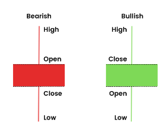
What is the psychology behind the pattern?
A spinning top is an indecisive candle and explains high volatility and a tough fight between the bulls and the bears. It is formed when the bulls send the price higher than the opening price, and the bears then push it back down before the market closes, or vice versa. If a spinning top is formed, it means that the market has explored upward and downward options but then settles at more or less the same opening price - resulting in no meaningful change. If it is formed after a large uptrend, accompanied by
high volumes, there are high possibility of a potential reversal and if the spinning top is seen at the bottom of a downtrend, it could mean that a bullish reversal might happen.
Register today to unlock the power and significance of Candlesticks with our candlestick pattern course and harness the potential of candlestick patterns.
Confirmation
Confirmation of this candlestick pattern occurs when the next candle. If after an uptrend, a spinning top is formed, the next candle closing below the low of the spinning top candle will confirm a possible bearish reversal. If after a downtrend trend, a spinning top is formed, the next candle closing above the high of the spinning top candle will confirm a possible bullish reversal. Volumes must be kept in mind to take any action. The spinning top candles should be accompanied with high volumes. Always consider other patterns and indicators, to confirm the signal, and make sure that you do not deviate from your trading plan and risk management strategy.
Shooting Star
The next candlestick pattern we will learn is a Shooting star. Imagine a falling star from the sky. How does it look? It is very similar on the technical charts as well. So, let us dig deep into this pattern and understand it thoroughly.
What is a shooting star candlestick patterns?
A shooting star is a candlestick pattern that forms when the price of the security opens and rises but then closes near the open price. The distance between the highest price and the opening price should be more than twice as the shooting star's real body. It usually occurs at the end of an uptrend and gives us a signal of a bearish reversal. Volume must be high on this candle. The colour of the real body is not important.
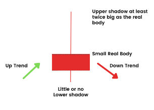
What is the psychology behind the pattern?
A shooting star is a bearish candle, as it is formed after a run up in prices. It explains high volatility and profit booking at higher levels. It is formed when the bulls send the price higher than the opening price, and the bears then push it back down before the market closes. If a shooting star is
formed, it means that the market has seen some sell off from the smart hands at higher levels. If it is formed after a large uptrend, accompanied by high volumes, there is a high possibility of a potential trend reversal.
Confirmation
Confirmation of this candlestick pattern occurs when the next candle. If after an uptrend, a shooting star is formed, the next candle closing below the low of the shooting star candle will confirm a possible bearish reversal. Volumes must be kept in mind to take any action. The shooting star candles should be accompanied with high volumes. Always consider other patterns and indicators, to confirm the signal, and make sure that you do not deviate from your trading plan and risk management strategy.
Marubozu
The next candlestick pattern that we will learn is a Marubozu.This Japanese word Marubozu means 'Bald head'. Remember what we have learned earlier about a candlestick. It consists of a real body and wicks or popularly called upper and lower shadows. This particular type of candlesticks pattern doesn't have wicks. So, let us understand the concept more deeply and learn how a Marubozu candlestick pattern is formed.
What is a Marubozu candlestick pattern?
A Marubozu is a single candlestick having a long real body and with no shadows. This real body indicates a strong movement that may be in any particular direction either upside or downside. When a bullish Marubozu is formed, it indicates that the price opened, traded higher, and finally closed in the mid of an attempt to rise further. Here the opening price is the same as the low price and the closing price is the same as the high price. When a bearish Marubozu is formed, then it indicates that the price opened, traded lower, and finally closed in the mid of an attempt to fall further. Here the
opening price is the same as the high price and the closing price is the same as the low price.
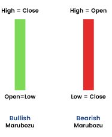
What is the psychology behind the pattern?
A bullish Marubozu indicates that there is strong buying interest in the stock that the bulls were
willing to buy the stock at every price point during the day, so much so that the stock closed near its high point for the day. Prior trend does not hold too much importance here. The price action on the Marubozu day suggests that the sentiment has changed and the stock is now bullish.
A bearish Marubozu indicates that there is so much selling pressure in the stock that the market participants actually sold at every price point during the day, so much so that the stock closed near its low point of the day. It does not matter what the prior trend has been, the action on Marubozu day suggests that the sentiment has changed and the stock is in the hands of the bears.
Confirmation
Confirmation of this candlestick pattern occurs when the next candle. For a bullish Marubozu candle, the buying should be done above the closing price and for a Bearish Marubozu a short position can be initiated below the close price. The logical stoploss for the trade is the Low of the candle in case of Bullish Marubozu and High of the candle in case of the Bearish Marubozu candle.
I shall again stress on the fact that a bullish or a bearish trade based only on the Marubozu candle should be avoided and should be confirmed with other technical indicators also.
This candlestick is more commonly used by the traders to understand the overall market sentiment rather than standalone trade.
Doji
Doji is the next type of candlestick pattern that we will learn in the section. A Doji can be formed in different ways. Let's seehow.
What is a Doji candlestick pattern?
A Doji is a candlestick pattern that resembles a cross as the opening price and the closing prices are equal or almost equal. It reflects indecisiveness in the market hence there is no real body in the candle. The length of the shadows can vary and so the size of the entire candle. According to various shapes and sizes, there are four types of Doji.
- Standard Doji
- Long legged Doji
- Dragonfly Doji
- Gravestone Doji
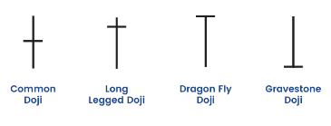
What is the psychology behind the pattern?
This candlestick pattern is formed when the market opens, bullish traders try to push prices up whereas the bearish traders reject and push it back down. It could also be that bearish traders try to push prices as low as possible, and the bulls fight back and push the price up. When looked at the Doji Pattern in isolation, it depicts that traders that neither buyers or sellers are gaining - it's a sign of indecision, or neutrality. Some traders believe that the Doji indicates an upcoming price reversal when viewed alongside other candlestick patterns. After a strong uptrend or a downtrend, a Doji formation accompanied with high volumes is a possible sign of reversal. There are times when it could signal that buyers or sellers are gaining momentum for a continuation trend. Normally these Doji's indicate markets are tired, and want some rest. Volumes are low in these candles. The size of the candles is also comparatively small.
Confirmation
A trader should always look for signals that complement what the Doji candlestick is suggesting in order to execute higher probability trades. Logically trade in the direction of the breakout of the next candle. On the next candle if the high or the low of Doji is breached, take the trade in that direction, keeping the other end as the stoploss.
Hanging Man
The next candlestick pattern that we will learn is usually formed at the end of an uptrend which is a Hanging Man candlestick pattern.
Hanging man is a bearish reversal single candlestick pattern. It has a long lower shadow & a small real body. A hanging man appears at the end of an uptrend indicating weakness on the upside price movements. This means the bulls have lost their strength & bears have taken over.
So how can we identify such a pattern?
- There is no or a little upper shadow
- The lower shadow is at least twice as long as the real body.
- The real body is on the upper end of the candlestick.
Here is a formation of the Hanging man candlestick pattern: 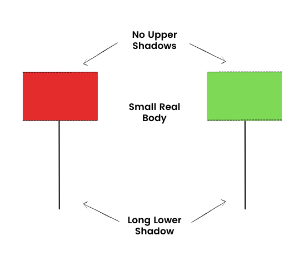
What is the psychology behind the pattern?
The prior trend of the market was up. In continuation of the previous trend, the market opens higher. This
signifies that bulls are still active. During the session, the bears take over, and some sell-off from the top is noted.
This could possibly be profit-booking by smart money. The price eventually bounces back & it closes near its high. Since
sell off was noted at higher levels post-confirmation, we can expect a reversal to occur.
Confirmation
The trend
reversal will be confirmed if the next candle breaches the hanging man candle low. Traders can go short once the price
breaches the low of the hanging man candle keeping high as the stop loss.
Example: we can see the formation of the
Hanging Man candlestick pattern on the Daily chart of Nifty 50 below:
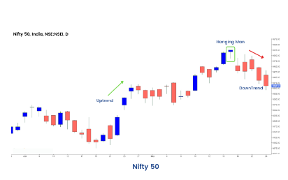
Bullish and Bearish Engulfing Candlestick Pattern
Till now, in this module, we have covered all the single candlestick patterns. From this section onwards, we will learn another set of candlestick patterns that are formed with the combination of two or more candlesticks. So, let us begin with an Engulfing candlestick pattern that can be either bullish or bearish.
What are Bullish and Bearish Engulfing
Candlestick Patterns?
The Engulfing candlestick is multiple candlestick patterns that signal a reversal of the ongoing
trend in the market. This candlestick pattern involves two candles with the latter candle 'engulfing' the body of the
earlier candle. The 1st candle will always be the colour of the prior trend and the second candle will be the reversal
candle.
The bullish engulfing candle signals bullish reversal and indicates a rise in buying pressure when it appears
at the bottom of a downtrend. This pattern triggers a reversal of the ongoing trend as more buyers enter the market and
move the prices up further. The pattern involves two candles with the second green candle completely engulfing the
'body' of the previous red candle.
The bearish engulfing pattern is the opposite of the bullish pattern. It signals a
bearish reversal and indicates a fall in prices by the sellers who exert the selling pressure when it appears at the top
of an uptrend. This pattern triggers a reversal of the ongoing trend as more sellers enter the market and they make the
prices fall.
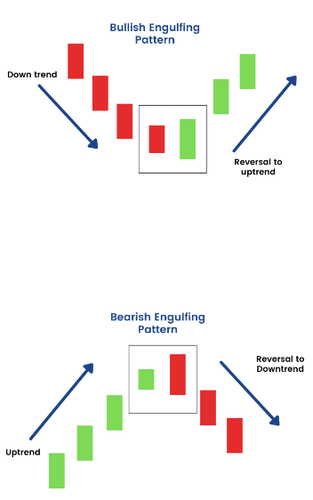
What is the psychology behind the pattern?
Bullish Engulfing Pattern:
As the ongoing trend is down, the
prices keep making new lows. In the current downtrend, a bearish candlestick is formed as the market is expected to move
lower. On the second day, the price opens below the previous day's closing price which attempts to make a new low. But
this opening price becomes the low price of the day as there is sudden buying interest by the bulls that rises the
prices to close higher than the prior day's open price. This indicates that the bulls are back into action and now the
trend may reverse to the uptrend.
Bearish Engulfing Pattern:
As the ongoing trend is up, the prices keep making new
highs. In the current uptrend, a bullish candlestick is formed as the market is expected to move higher. On the second
day, the price opens above the previous day's closing price which attempts to make a new high. But this opening price
becomes the high price of the day as there is sudden selling interest by the bears that pushes down the prices to close.
This indicates that the bears are back into action and now the trend may reverse to the downtrend.
Confirmation
After
the bullish engulfing pattern, if a bullish candle is formed after this pattern then it confirms the reverse signal
given by this pattern. One must consider a long position only above the high of the reversal engulfing candle keeping
the stoploss as the low of the reversal candle. Similarly, after the bearish engulfing pattern if a bearish candle is
formed after this pattern then it confirms the reverse signal given by this pattern. One may look out for selling
opportunities only below the low of the engulfing candle, keeping high of engulfing candle as the stoploss.
Bullish and Bearish Harami Candlestick Pattern
Now, let us learn how a harami candlestick pattern is formed that can be either bullish or bearish.
What are Bullish
and Bearish Harami Candlestick Patterns?
The term Harami means "pregnant" in Japanese. A Bullish Harami is formed when
a large bearish candle appears on Day 1 that is followed by a smaller bullish candle on the next day. An important
aspect of the bullish Harami is that prices should gap up on Day 2 so that price is held up by the buyers and is unable
to fall to the bearish close of Day 1.
A Bearish Harami is formed when there is a large bullish candle on Day 1 and is
followed by a smaller bearish candle on Day 2. An important aspect of the bearish Harami is that prices should gap down
on Day 2.
The real body of the candle on Day 2 will be well within the real body of Day 1 candle. The 1st candle will
always be the colour of the prior trend and the second candle will be the reversal candle.
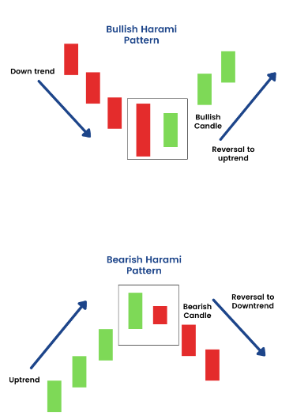
What is the psychology behind the pattern?
Bullish Harami Pattern:
As the strong downtrend is going on the prices keep making lower lows. As
the market moves down a long-bodied bearish candle is formed on the first day of this candlestick pattern as per the
expectations of the bears. On the second day, the prices open gap up which shows that the bulls are back in action and
exerting buying pressure. The bulls try to push up the prices and they try to close above the opening price. But the
closing should be below the opening price of the prior day's candle.
Bearish Harami Pattern:
As the strong uptrend is
going on the prices keep making higher highs. As the market moves up a long-bodied bullish candle is formed on the first
day of this candlestick pattern as per the expectations of the bulls. On the second day, the prices open gap down which
shows that the bears are back in action and exerting selling pressure. The bears try to push down the prices and they
try to close below the opening price. But the closing should be above the opening price of the prior day's candle.
Confirmation
As we know all candlestick patterns
need a confirmation. In case of a Bullish Harami pattern, we get a confirmation on the third candle. The third candle
should be bullish. A probable trade set up can be initiated if the third candle crosses the 1st candles's high keeping
stoploss at the 1st candle's low. A trader must keep in mind other technical parameters to initiate the trade. In case
of a Bearish Harami pattern also, we get a confirmation on the third candle. The third candle should be bearish. A
probable trade set up can be initiated if the third candle crosses the 1st candles's low keeping stoploss at the 1st
candle's high.
Dark Cloud Cover Candlesticks Pattern
The next candlestick pattern that we will learn is a Dark Cloud Cover. It is an extremely important pattern for traders because it shows a possible signal of reversal to the downside. So, let us learn everything about this pattern in greater detail.
What is a Dark Cloud Cover Candlestick Pattern?
The Dark Cloud Cover pattern includes a large bearish
candle (black/red) candle forming a "dark cloud" over the previous day's candle. The buyers push the price higher at the
open, but then the sellers take over later in the session and push the prices down. This shift from buying to selling
signals that a price reversal to the downside could be forthcoming. A trader should consider the Dark Cloud Cover
pattern useful only when it occurs at the end of an uptrend. As the prices rise, the pattern becomes more important for
the reversal to the downside. If the price action is choppy then the pattern is less significant as the price remains
choppy after this pattern.
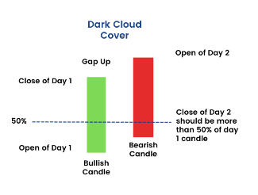
What is the psychology behind the pattern?
As the current trend is up, the prices keep
making higher highs. On the first day of this pattern formation, as per the expectations, the prices move higher,
forming a good bullish candle. On the next day, the price opens above the prior day's closing price. This also signifies
that bulls are still in action and prices are trading up. But there is sudden selling interest from the bears which
moves the prices down.
However, the bears keep selling, and at day's end, the price closes below the opening price.
This indicates that the bears are back in the market. The real body of candle 2, should cover the real body of the 1st
candle at least by 50%.
Confirmation
The confirmation of the reversal signal is given by the bearish candle on the next
session after the formation of this pattern. The third candle should be a bearish candle. On the break of 1st candles
low, a short trade can be initiated. Stop- loss can be placed at the high of the Day 2 candlestick. However as mentioned
earlier, a trader must keep in mind other technical parameters to initiate the trade. Confluence of indicators makes the
best trades.
Piercing Line candlestick pattern
The next candlestick pattern that we will learn is a Piercing Line pattern which is a bullish reversal pattern that can be found at the end of a downtrend.
What is a Piercing Line Candlestick Pattern?
This candlestick pattern is used as an
indicator to enter a long position or exit the sell position. Piercing pattern is formed when the bulls and bears, both
are fighting to gain control over the prices. The piercing pattern is made up of two candlesticks. The first candlestick
should be a red candlestick having a large real body, which indicates continuation of the prior trend. The second
candlestick should be green in color and also should be below the low of the previous candlestick. The second
candlestick must close above the middle of the real body of the first candlestick.
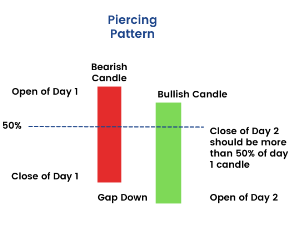
What is the psychology behind the pattern?
As the current trend is down, the prices keep making lower lows. On the first day of this pattern formation, as
per the expectations, the prices move lower, forming a bearish candle. On the next day, the price opens below the prior day's closing price. There is sudden buying pressure from the bulls which moves the prices up.
However, the bulls keep
buying, and at day's end, the price closes above the opening price. This indicates that the bulls are back in the
market. The real body of candle 2, should cover the real body of the 1st candle at least by 50% from below.
Confirmation
The confirmation of the reversal signal is given by the bullish candle on the next session after the
formation of this pattern. The third candle should be a bullish green candle. On the break of 1st candles high, a long
trade can be initiated. Stop-loss can be placed at the low of the Day 2 candlestick. However as mentioned earlier, a
trader must keep in mind other technical parameters to initiate the trade.
Tweezer Top and Bottom Candlestick Pattern
A tweezer top and bottom are very similar to a double top or a double bottom formation on any price chart. Let us discuss more on this candlestick pattern and understand the concept behind it.
What is a Tweezer Top and Tweezer Bottom
Candlestick Pattern?
The tweezer pattern is a reversal pattern that consists of two candlesticks. They help the traders
by providing trade signals. The basic criteria of formation of these patterns is that the 1st candle colour will always
be of the prior trend and the second candle colour will be of the reversal colour opposite to the 1st one. The real
bodies are not important in these candles. The shadows should match.
The tweezer top candlestick pattern is a bearish
reversal pattern that consists of two candlesticks. The 1st candle is a bullish candle and the second is a bearish
candle. Both the candles should have matching highs or upper shadows at the same level.
The tweezer bottom candlestick
pattern is a bullish reversal pattern that consists of two candlesticks. The 1st candle is a bearish candle and the
second is a bullish candle. Both the candles should have matching lows or lower shadows at the same level.
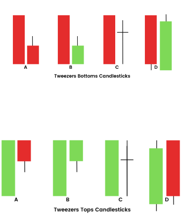
What is the psychology behind the pattern?
Tweezer Top:
A Tweezer Top is formed at the end of an uptrend where the prices make
higher highs. The first candlestick of this pattern is a bullish candlestick that is formed as per the expectations of
the current market sentiment. As this pattern is formed near the resistance level, the sentiments of the traders
reverses and they begin to sell. Due to this bearish sentiment a bearish candlestick is formed that indicates that the
bears have taken control over the prices.
Tweezer Bottom:
A Tweezer Bottom is formed at the end of a downtrend where
the prices make lower lows. The first candlestick of this pattern is a bearish candlestick that is formed as per the
expectations of the current market sentiment. As this pattern is formed near the support level, the sentiments of the
traders reverses and they begin to buy. Due to this bullish sentiment a bullish candlestick is formed that indicates
that the bulls have taken control over the prices.
Please note the colour of the candle is not that important in the
case of tweezer tops and tweezer bottoms candlestick patterns. As you see in the above diagram, there are multiple ways
tweezer tops and bottoms are formed. The important thing to keep in mind is that in the case of the tweezer top, both
the candles' tops should be almost similar and in the case of the tweezer bottom, both the candles' bottoms should be
the same.
Confirmation
In the case of a tweezer top candlestick pattern, the confirmation is given by the bearish
candle on the third candle. One can initiate a sell trade when the lower low of the two candles are breached keeping the
high of the candle 2 as the stoploss. In case of the tweezer bottom, the confirmation is obtained by the third bullish
candle. One can initiate a long position when the higher high of the previous two candles is crossed, keeping second
candles's low as the stoploss.
Morning Star Candlestick Pattern
The last two candlestick patterns that we are left with is a Morning star and an Evening star candlestick pattern. Firstly, let's start with the Morning star candlestick pattern.
What is a Morning Star Candlestick Pattern?
A morning
star is a candlestick pattern that is made of three candlesticks. A morning star is formed after a downtrend, signaling
the start of an upward movement of the price. It signals a bullish reversal in the prior price trend. It is a rare
pattern on charts.
The 1st candle is a long big red candle which signifies continuation of the prior trend. The second
candle in the Morning star opens gap down, and is a small real body candle. It's normally a Doji or a spinning top. The
colour of the second candle is not important. The real body of candle 1 and candle 2 should not overlap each other. The
third candle opens gap up and is a long bullish candle. Again the real body of the second and third candle should not
overlap.
If we remove the second candle from between, the relationship between 1st and 3rd candle is that of a bullish
engulfing pattern or a piercing line pattern. Volumes should be high during these candle formations.
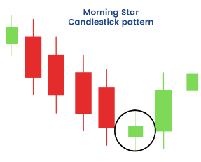
What is the psychology behind the pattern?
The current market sentiment is bearish, and the prices keep on making lower lows. When
the first candle of the morning star forms, this bearish sentiment holds one.
When the second candle is formed, then
the market sees another bearish day as the candle gaps down. As the market has gone down quite a lot, they start
assuming that the reverse must be coming, as it has continued down for some time. Due to this, the buying pressure
increases and it makes it harder for the bears to continue pushing the prices down. The market closes around where it
opened, and thus creates a Doji or a spinning top candlestick pattern. The third-day candle confirms that the bulls
have taken control over the prices. The market opens gap up and more people are expecting the trend to reverse. Due to
this sentiment, the third candle is a bullish candlestick.
Confirmation
The confirmation of the reversal signal is
given by the third bullish candle itself. Once it is clear during the session that the third candle will close higher
and relationship between 1st and 3rd candle would be that of bullish engulfing or piercing line, a long trade can be
initiated. Stop-loss can be placed at the low of the second candlestick.
Evening Star Candlestick Pattern
After learning the Morning star candlestick pattern previously, let us now understand the Evening star candlestick pattern.
What is an Evening Star Candlestick Pattern?
Evening Star is a candlestick pattern that appears at the end of
the uptrend and signals that a downtrend is going to take place. It consists of three candlesticks: a large bullish
candlestick, a small-bodied candle, and a bearish candlestick.
The first candle in the pattern, is in continuation of
the prior trend, the market opens high, makes a new high and closes near the high point of the day. The long bullish
candle formed on the 1st day shows buying acceleration. On the 2nd candle of the pattern, the market opens with a gap up
reconfirming the bull's stance in the market. However after the encouraging open the market/stock does not move, and
sees a selling pressure. It closes by forming a doji/spinning top. On the 3rd candle of the pattern, the market opens
gap down and progresses into a red candle. The long red candle indicates that the bears are taking control.
So the 1st
candle is a bullish candle, 2nd candle is a doji or a spinning top. The colour of the second candle is not important.
The real body of candle 1 and candle 2, should not overlap each other. The third candle opens gap down and is a long
bearish candle. Again the real body of the second and third candle should not overlap. If we remove the second candle
from between, the relationship between 1st and 3rd candle is that of a bearish engulfing pattern or a dark cloud cover
pattern. Volumes should be high during these candle formations.
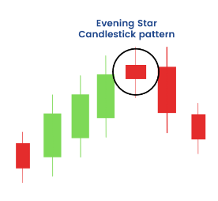
What is the psychology behind the pattern?
The current
market sentiment is bullish, and the prices keep on making higher highs. When the first candle of the evening star
forms, this bullish sentiment holds. When the second candle is formed, then the market sees another bullish day as the
candle gaps up. As the market has gone up quite a lot, traders assume that profit booking might come in, as it has
continued up for some time. Due to this, the selling pressure starts and it makes it harder for the bulls to continue
pushing the prices up. The market closes around where it opened, and thus creates a Doji or a spinning top candlestick
pattern. The third-day candle confirms that the bears have taken control over the prices by the formation of the bearish
candle. The market gaps down and more people are expecting the trend to get reverse.
Confirmation
The confirmation of
the reversal signal is given by the third bearish candle itself. Once it is clear during the session that the third
candle will close lower and relationship between 1st and 3rd candle would be that of bearish engulfing or dark cloud
cover, a short trade can be initiated. Stop-loss can be placed at the high of the second candlestick.
Conclusion
Now
that we are at the end of the module, we have completed our learning about candlestick charts and patterns. It is now
time to practice them well and start identifying them on the price charts. But remember, the learning does not end here.
There are so many things to learn about technical analysis. Analyzing candlestick chart patterns is a part of the bigger
goal, which is to become a wonderful trader. So, there are a lot more things to learn about technical analysis, which we
have covered in different modules of ELM School. Be sure to read them all to gather the necessary knowledge and skill
about technical analysis to become a successful trader.
Related Modules
Basics of Technical analysis
Understand basics of chart patterns, candlesticks, indicators, volume,...
Chart Patterns
Learn to predict future price movement with chart patterns
Technical Indicators
Understand how to identify the trend's direction